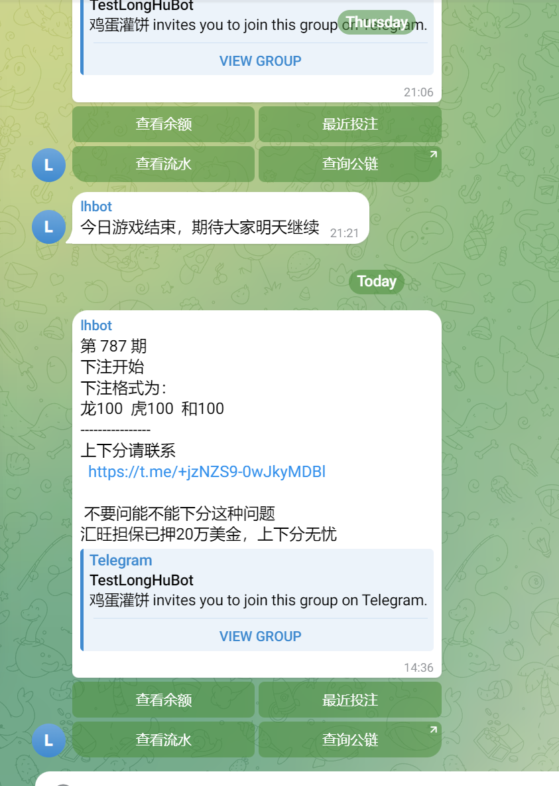
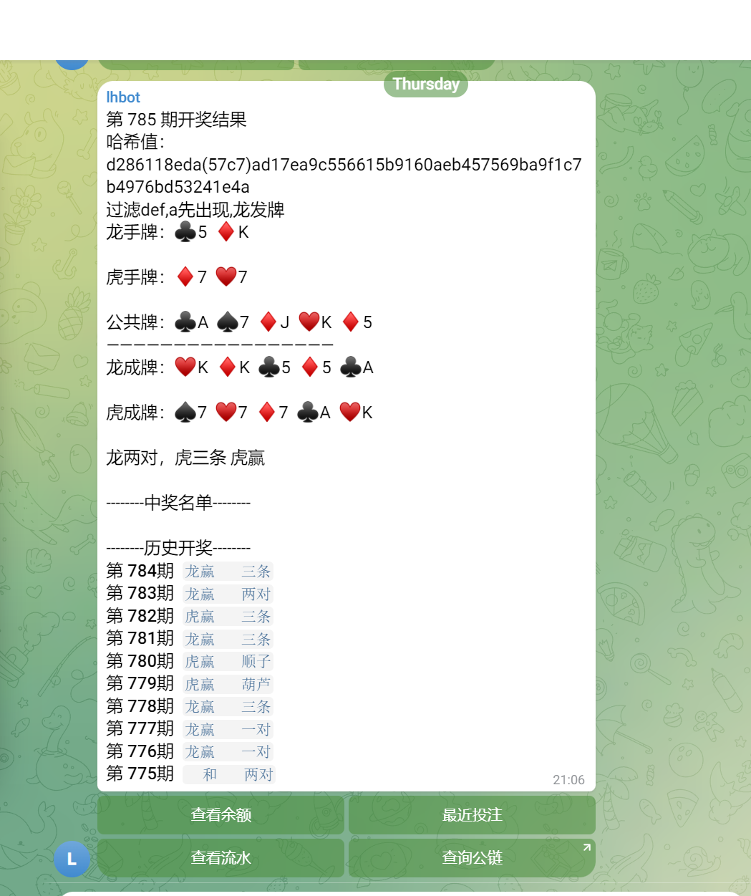
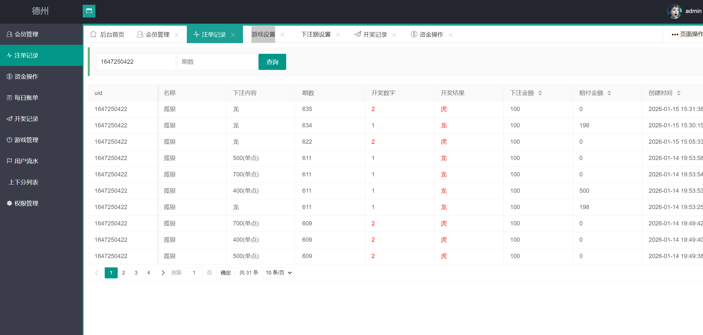
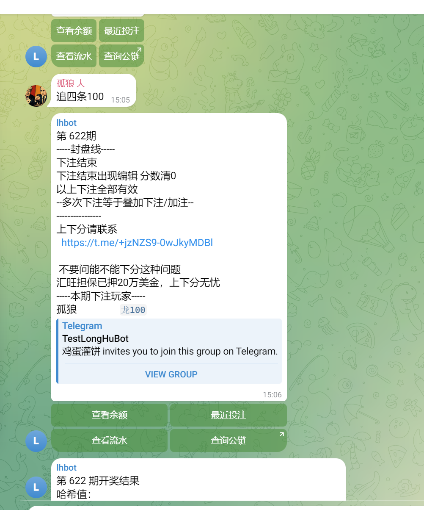
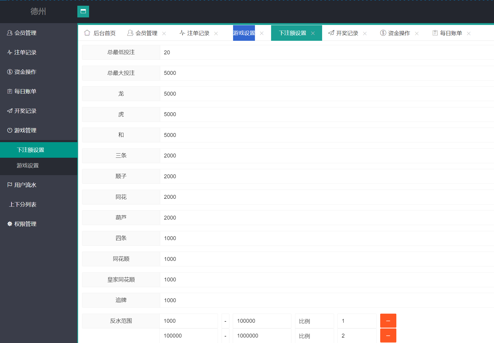

Telegram 德州源码
TG Bot、群内交互、多群运营和源码边界。
每页包含产品介绍、真实截图、用户流程和可验证技术边界，不建立只有关键词的空页面。
TG Bot、群内交互、多群运营和源码边界。
手机网页、Telegram 内置浏览器和 PHP 服务。
快节奏玩法、结果通知和 Hash 验证。
Bot 指令、服务调用、消息和多群管理。





线上 README 描述 Telegram Bot API、PHP、MySQL、Redis、H5 Web、多群组、余额、记录、自动派彩和 Hash 验证。当前公开仓库只是有限代码快照，完整 Bot、数据库、后台和部署组件必须以授权交付清单为准。